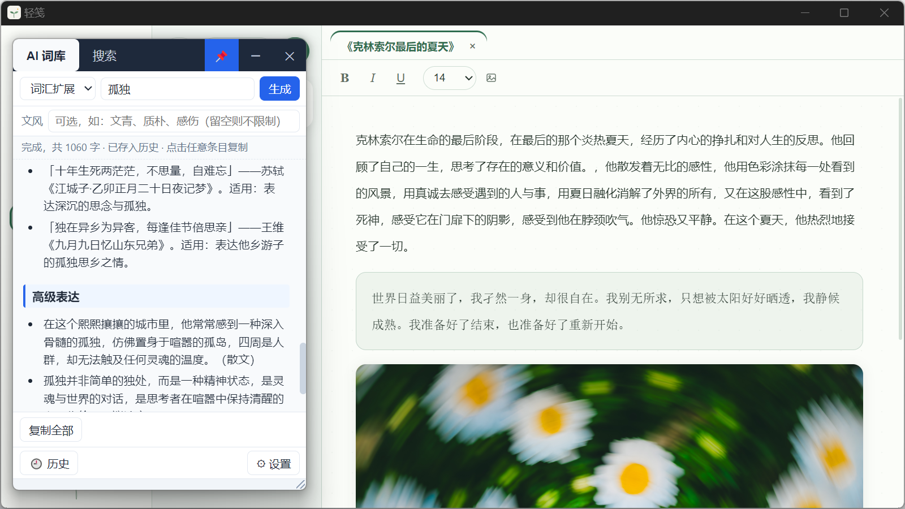
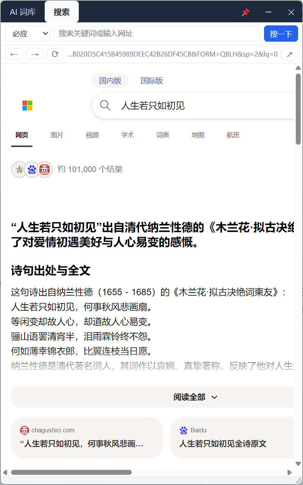

壹
贴在你的写作软件之上
无边框小窗常年浮在文稿之上,不抢焦点、不用切窗口。卡住的句子还在屏幕上, 要查的词就在旁边——查完继续写,思路不断。

贰
AI 词库,点击即用
输入一个关键词,AI 流式返回同义词(口语 / 书面 / 高级三档)、成语、诗词名句与高级表达。 输出按固定小节逐条排列,每条独立成行——点任意一条即复制,直接贴进文稿。
- 四段产出:同义词三档、成语(拼音+释义+例句)、诗词名句、高级表达
- 点击任意条目即复制,查询历史自动保存
- 可加「文风」:文青、质朴、古风文言——只改语言气质,不改输出结构

叁
窗内直接搜资料
小窗里内嵌了一个迷你浏览器,必应 / 百度 / Google 的结果页直接在窗内浏览, 还能点进子页面继续找。需要登录或操作复杂的页面,一键 ↗ 转交系统浏览器接着看。
- 三个搜索引擎一键切换,后退 / 刷新齐全
- 结果页里可继续点进子页面浏览
- 一键转交系统浏览器,登录等操作不吃力
肆
还有这些
除了查词和搜索,小窗本身也按"长期开着"来设计——位置记得住、技能能自己写、 配置和历史都留在本地。
-
四种内置技能
词汇扩展、精准释义、句子润色、场景描写,下拉即切。
-
精准释义
核心语义、语义强弱与感情色彩、常见搭配、易混词辨析——客观说明,不掺文风。
-
自定义技能
往配置目录放一个 JSON(提示词模板 + 温度),重启即可在下拉框看到。
-
窗口记忆
位置、大小、置顶状态跨重启恢复;外接屏拔掉也会自动回到屏幕中央。
-
查询历史
自动保存最近 100 条,条目上带「文风:××」标记,点回看一并恢复。
-
任意兼容服务
默认智谱(glm-4.5-flash 免费),OpenAI 兼容协议,可换任何服务;支持演示模式无 Key 体验。